A legjobb
pillanatok
a Parton kezdődnek
Meghitt környezet, rugalmas lehetőségek és különleges helyszín – hogy rendezvénye valóban emlékezetes legyen.
Ajánlatkérés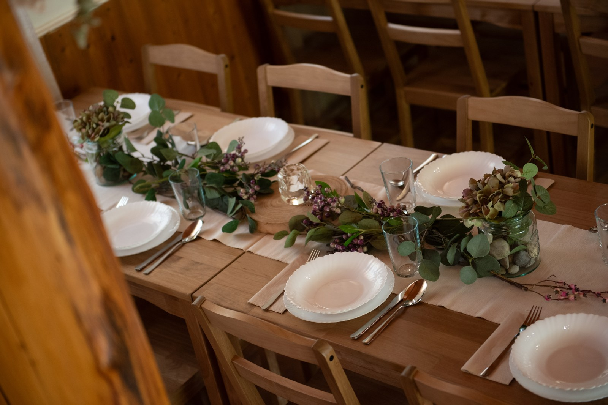
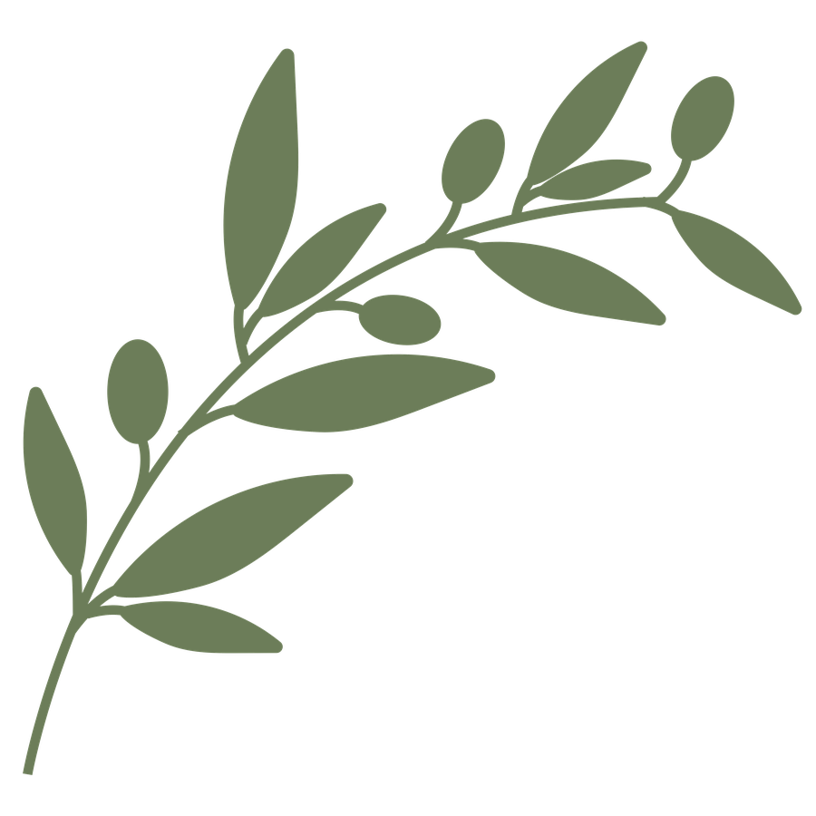
Max. 48 fő
beltéren, ültetve
Max. 100 fő
kültéren, sörpados elrendezéssel
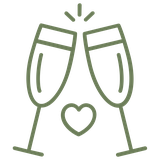
Rugalmas terek
beltéri és kültéri lehetőségek többféle rendezvénytípushoz
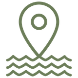
Közvetlen vízpart
nyugalom és természet közvetlen közelségben
Üdvözlünk a Parton!
A tó partján, a természet ölelésében alakítottuk ki rendezvénytermünket, ahol a fa melegsége és a nyugodt környezet adja az élmény igazi alapját.
Legyen szó születésnapról, családi ünnepről, esküvőről, baráti összejövetelről vagy céges rendezvényről, nálunk minden adott a különleges pillanatokhoz.
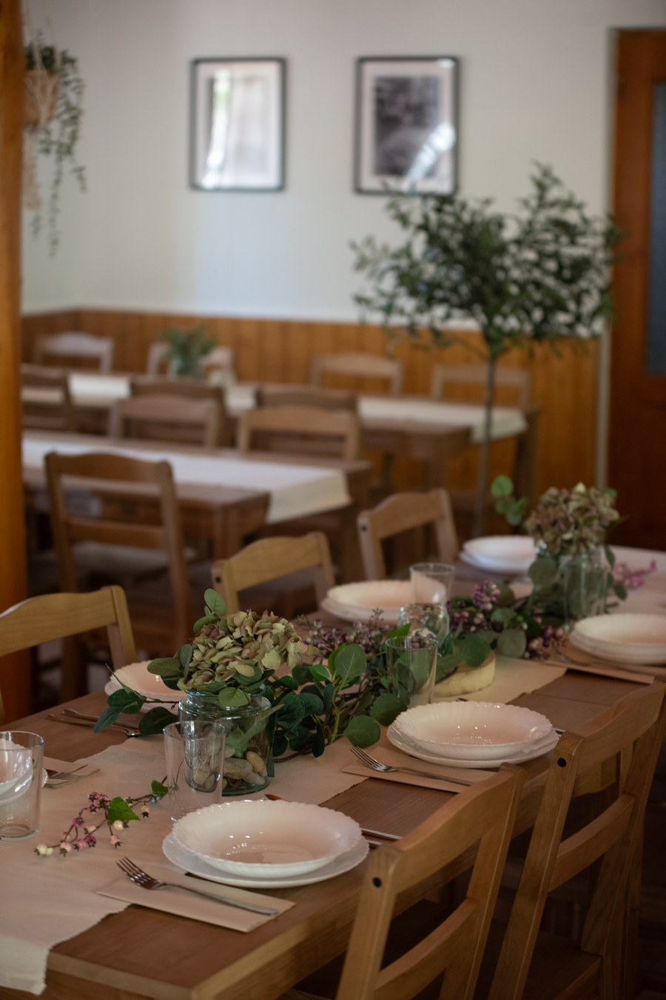
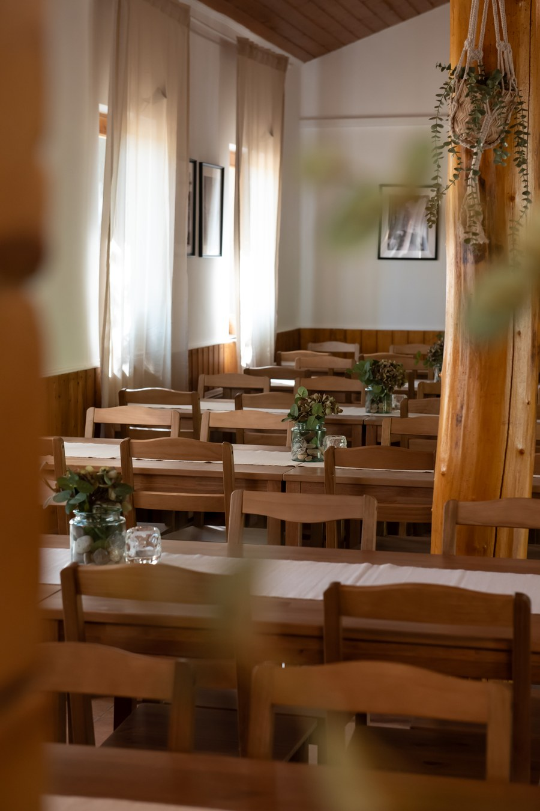
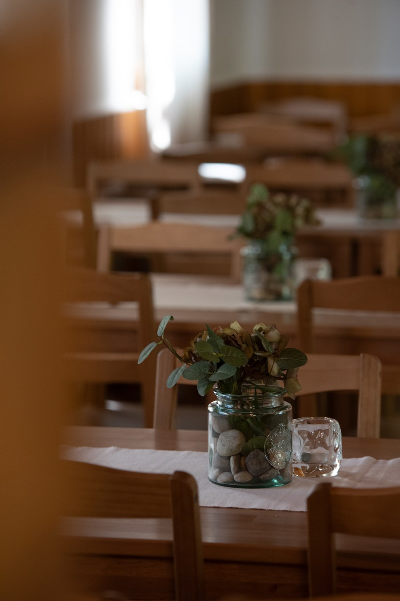
Minden alkalomra
A tökéletes helyszín
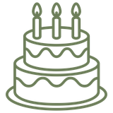
Születésnapok
Ünnepeld meg úgy, ahogy megálmodtad.
Családi ünnepek
Meghitt pillanatok a szeretteid körében.
Esküvők
Romantikus helyszín a nagy naphoz.
Céges rendezvények
Inspiráló környezet csapatoknak.
Workshopok & programok
Kreatív események egy különleges helyen.
Kültéri rendezvények
Tóparti hangulat akár 100 főig.
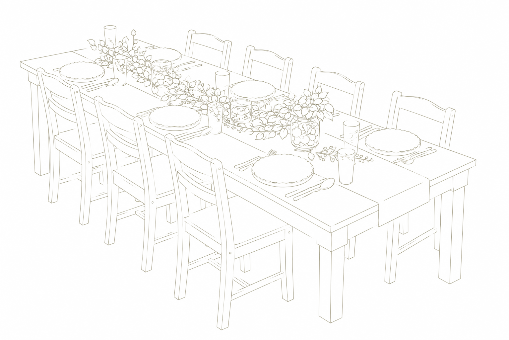
Minden egy helyen
A Parton több mint egy rendezvényterem: egy hely, ahol a természet közelsége és az együtt töltött idő kerül a középpontba.
A hangulatos belső térből néhány lépés, és máris a tóparton vagytok. Napközben a víz és a természetes környezet, estére a fények és a csendesebb, meghittebb hangulat ad különleges hátteret az ünnepléshez.
Nálunk nincsenek kötött forgatókönyvek. Ti hozzátok az elképzelést, mi pedig adjuk hozzá a helyet – hogy a nap pontosan olyan lehessen, amilyennek megálmodtátok.
Galéria
A terem és a hangulat
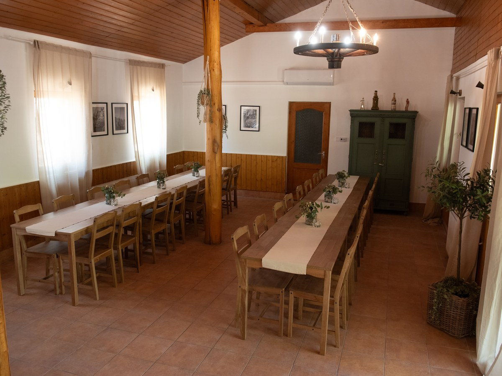
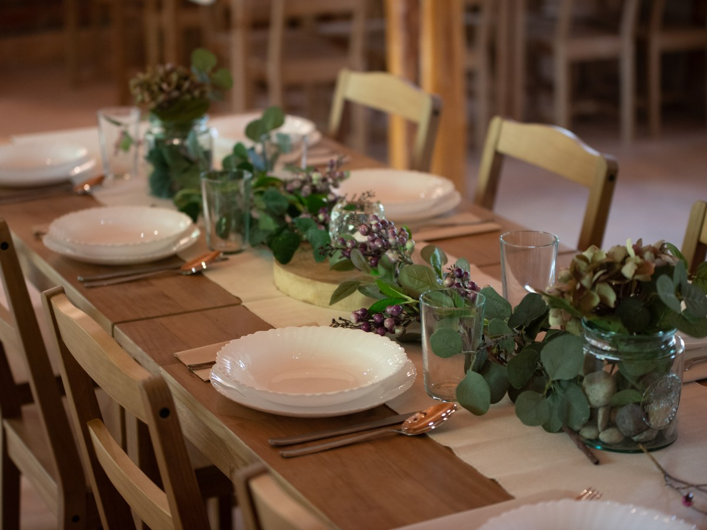
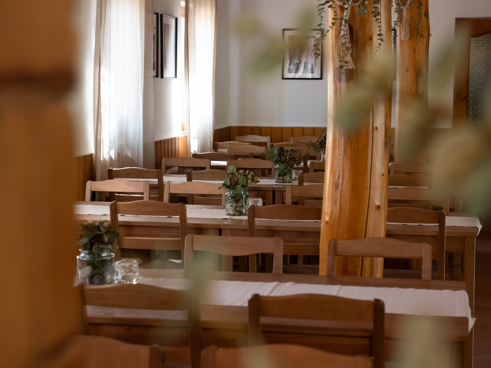
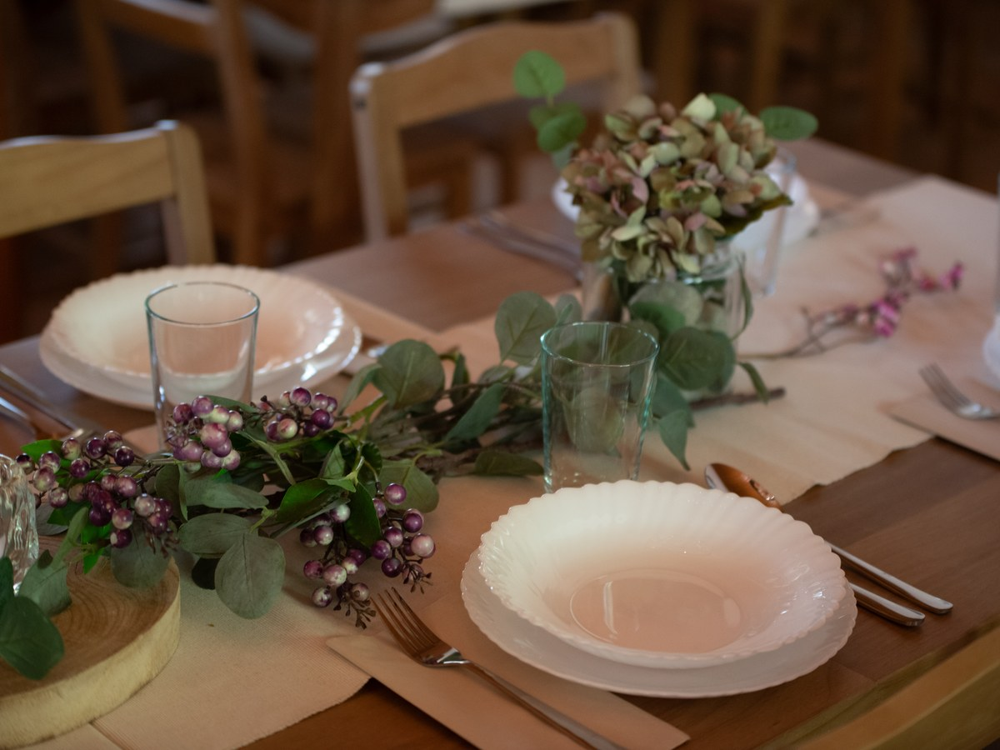
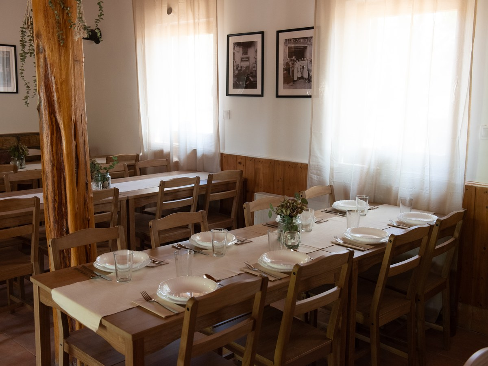
Várunk a Parton.
Írj nekünk néhány sort az elképzelésedről, és felvesszük veled a kapcsolatot.
Ajánlatkérés